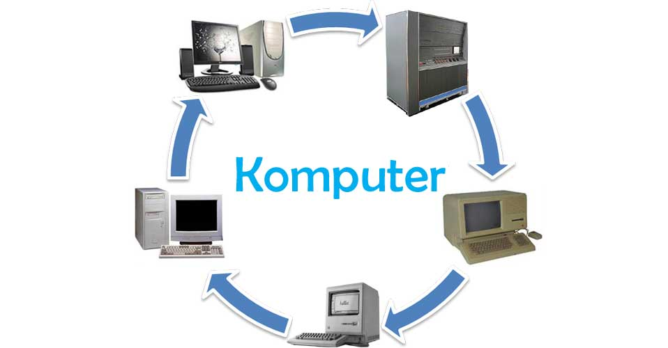

Dalam era digital yang semakin kompleks ini, komputer menjadi motor utama dalam kehidupan. Mari kita membahas dan menyelami makna dan keajaiban di balik konsep ini, yang membawa kita menuju pemahaman yang lebih dalam tentang teknologi yang mengubah dunia.
Dalam perjalanan materi ini, Anda akan diantar ke dalam perjalanan menggali sejarah, mendefinisikan makna, melihat evolusi hardware dan software, serta meresapi beragam klasifikasi komputer yang menggetarkan.
Bagaimana konsep dasar komputer memengaruhi cara kita berinteraksi dengan teknologi sehari-hari??
Konsep dasar komputer memiliki dampak besar pada cara kita berinteraksi dengan teknologi sehari-hari. Memahami konsep seperti pengolahan data, pemrograman, dan komunikasi digital, kita akan menjadi lebih mampu menggunakan berbagai perangkat dan aplikasi dengan efisien. Misalnya, pemahaman tentang konsep pemrosesan data membantu kita dalam menyusun informasi, membuat keputusan, dan menyelesaikan tugas secara lebih terstruktur. Konsep pemrograman memungkinkan kita untuk membuat atau memodifikasi software sesuai kebutuhan kita, sehingga kita dapat menyesuaikan alat-alat digital dengan preferensi dan kebutuhan kita.
Selain itu, pemahaman tentang konsep jaringan komputer memungkinkan kita untuk terhubung dengan orang lain dan mengakses sumber daya secara global melalui internet. Maka dari itu, konsep dasar komputer membuka pintu bagi kemungkinan-kemungkinan baru dalam kehidupan sehari-hari kita, memungkinkan kita untuk lebih efektif, efisien, dan terhubung dalam menggunakan teknologi modern.
Sejarah Komputer
Sejarah komputer dimulai pada tahun 1822 ketika Charles Babbage, seorang ahli matematika asal Inggris, mencoba menciptakan sebuah mesin hitung bertenaga uap yang dapat menghitung tabel angka. Kemudian, perkembangan komputer dibagi menjadi 5 generasi, mulai dari generasi pertama (1940-1959) hingga generasi kelima. Setiap generasi memiliki ciri-ciri yang membedakannya, seperti ukuran fisik yang besar pada generasi pertama, penggunaan transistor pada generasi kedua, dan penggunaan Integrated Circuits pada generasi ketiga.
Komputer generasi pertama menggunakan tabung hampa udara, generasi kedua menggunakan transistor, generasi ketiga menggunakan Integrated Circuits, generasi keempat menggunakan mikroprosesor, dan generasi kelima menggunakan teknologi nano dan komputer quantum.
Definisi
Komputer adalah alat elektronik yang dapat mengolah data secara cermat menurut instruksi dan memberikan hasil pengolahan. Istilah "komputer" berasal dari bahasa Latin "computare" yang berarti menghitung, mengingat komputer awalnya dirancang sebagai mesin hitung. Komputer terdiri dari beberapa elemen utama, yakni perangkat keras atau "hardware" yang terdiri dari RAM, processor, harddisk, CPU, dan Motherboard, serta perangkat lunak atau "software" yang berisi program-program yang digunakan untuk mengolah data. Komputer dapat diklasifikasikan menjadi tujuh jenis berdasarkan bentuk dan ukurannya, seperti komputer portable, desktop, palmtop, tower, notebook, dan lain-lain.
Komputer memiliki fungsi utama sebagai alat elektronik otomatis yang dapat menghitung atau mengolah data secara cermat menurut instruksi, dan memberikan hasil pengolahan, serta dapat menjalankan sistem multimedia, biasanya terdiri dari unit pemasukan, unit pengeluaran, unit penyimpanan, dan unit pengontrolan.
Pengertian komputer secara umum adalah seperangkat alat elektronik yang bisa digunakan untuk mengolah data sesuai dengan sehingga mampu memberikan hasil informasi yang sangat bermanfaat untuk setiap penggunanya. Selain itu menurut Wikipedia, pengertian komputer adalah alat elektronik yang didalamnya terdapat rangkaian beragam komponen yang saling terkoneksi dan Sistem yang terdapat di dalam komputer ini bisa melakukan pekerjaan secara otomatis dengan berdasarkan program yang sudah sehingga bisa menghasilkan data serta program tertentu.
Perkembangan Hardware
Perkembangan hardware komputer telah melalui beberapa generasi, mulai dari generasi pertama yang menggunakan tabung hampa udara hingga generasi kelima yang menggunakan teknologi nano dan komputer quantum.
Generasi Pertama
Komputer menggunakan tabung untuk memproses data dan menyimpan data, seperti ENIAC, EDVAC, dan EDSAC.
Generasi Kedua
Penemuan transistor pada tahun 1948 memungkinkan komputer menjadi lebih kecil dan efisien.
Generasi Ketiga
Penggunaan Integrated Circuits memungkinkan komputer menjadi lebih kecil dan cepat lagi.
Generasi Keempat
Penggunaan mikroprosesor memungkinkan komputer menjadi lebih kecil dan hemat energi.
Generasi Kelima
Komputer dikembangkan untuk memiliki kemampuan proses real-time dan time sharing.
Perkembangan hardware komputer juga mempengaruhi perkembangan teknologi lainnya, seperti teknologi musik dengan munculnya iPod.

Perkembangan Software
Perkembangan software telah melalui beberapa era, mulai dari era 1950an hingga 1970an, era 2000an hingga saat ini. Pada era 1950an hingga 1970an, software mulai diciptakan dan banyak perkembangan dasar telah dilakukan. Pada era 2000an, software telah menjadi bagian integral dalam kehidupan sehari-hari manusia modern, dengan kemampuan menggunakan AI Machine hingga Parallel Architecture yang semakin baik. Perkembangan software juga melalui beberapa era, seperti era pioner, era stabil, era mikro, dan era modern. Pada era pioner, perangkat lunak masih berupa sambungan-sambungan kabel ke antar bagian dalam komputer.
Pada era stabil, perangkat lunak mulai bergeser menjadi sebuah produk yang dapat menjalankan beberapa fungsi. Pada era mikro, perangkat lunak berkembang untuk memenuhi kebutuhan perorangan. Pada era modern, tingkat kecerdasan yang ditunjukkan oleh perangkat lunak semakin meningkat, dengan kemampuan mengenal suara, gambar, dan lain-lain. Perkembangan software juga melalui berbagai bahasa pemrograman, mulai dari bahasa assembly awal yang digunakan pada komputer generasi pertama, kemudian muncul bahasa tingkat tinggi seperti FORTRAN, COBOL, dan BASIC, serta bahasa pemrograman modern seperti C, C++, Java, Python, dan JavaScript.
Klasifikasi Komputer
Berikut adalah beberapa contoh klasifikasi komputer :
Microcontroller
Microcontroller adalah sebuah komputer yang memiliki semua peralatan pokoknya sebagai sebuah komputer dalam satu chip. Peralatan tersebut diantaranya adalah pemroses (processing), memori, serta input dan output. Kadangkala pada microcontroller ini beberapa chip digabungkan dalam satu papan rangkaian. Perangkat ini sangat ideal untuk mengerjakan sesuatu yang bersifat khusus, sehingga aplikasi yang diisikan ke dalam komputer ini adalah aplikasi yang bersifat dedicated.
Microcomputer
Microcomputer khususnya digunakan untuk single-user, biasa disebut juga dengan komputer desktop atau komputer pribadi (personal computer). Komputer ini lebih cenderung digunakan untuk kebutuhan sehari-hari, seperti pekerjaan, komunikasi, dan hiburan.
Engineering Workstation
Engineering Workstation adalah sebuah komputer yang digunakan untuk kebutuhan engineering dan desain. Komputer ini memiliki kemampuan pemrosesan data yang lebih tinggi dan kemampuan pemrosesan grafik yang kuat. Komputer ini dirancang dan dikembangkan untuk bidang aplikasi professional.
Supercomputer
Supercomputer adalah sebuah komputer yang memiliki kecepatan pemrosesan data yang sangat tinggi. Kecepatan komputasi komputer ini dapat mencapai ratusan hingga jutaan ribu instruksi per detik. Hal ini sudah dapat memenuhi persyaratan pemrosesan data dan komputasi ilmiah dalam produksi, penelitian ilmiah, dan kehidupan.
Mainframe
Mainframe adalah sebuah komputer yang digunakan untuk skala besar. Komputer yang termasuk ke dalam kategori ini adalah komputer mainframe. Pada mesin tersebut dapat diakses beramai-ramai, dan sudah dilengkapi dengan perangkat dan software yang lengkap. Penggunaannya pun adalah untuk pengolahan perhitungan dengan kemampuan yang cukup rumit untuk diselesaikan oleh komputer.
Server
Server adalah sebuah komputer yang digunakan untuk berbagi sumber daya dan layanan ke perangkat lainnya. Komputer server ini memiliki struktur mirip dengan komputer biasa. Akan tetapi, berbeda dalam hal kekuatan pemrosesan, stabilitas, keandalan, keamanan, skalabilitas, dan pengelolaan.
Oleh karena itu, jenis komputer ini mampu melakukan komputasi berkecepatan tinggi operasi andal jangka panjang, dan throughput data eksternal yang kuat.